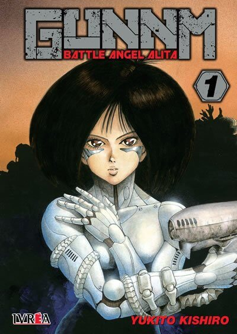
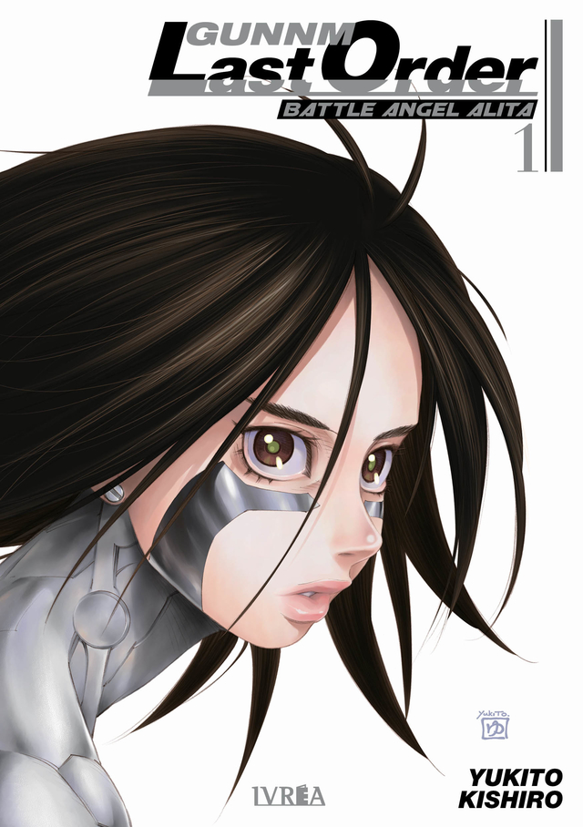
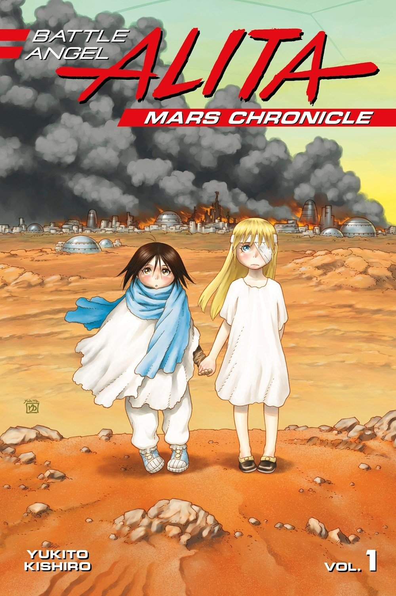
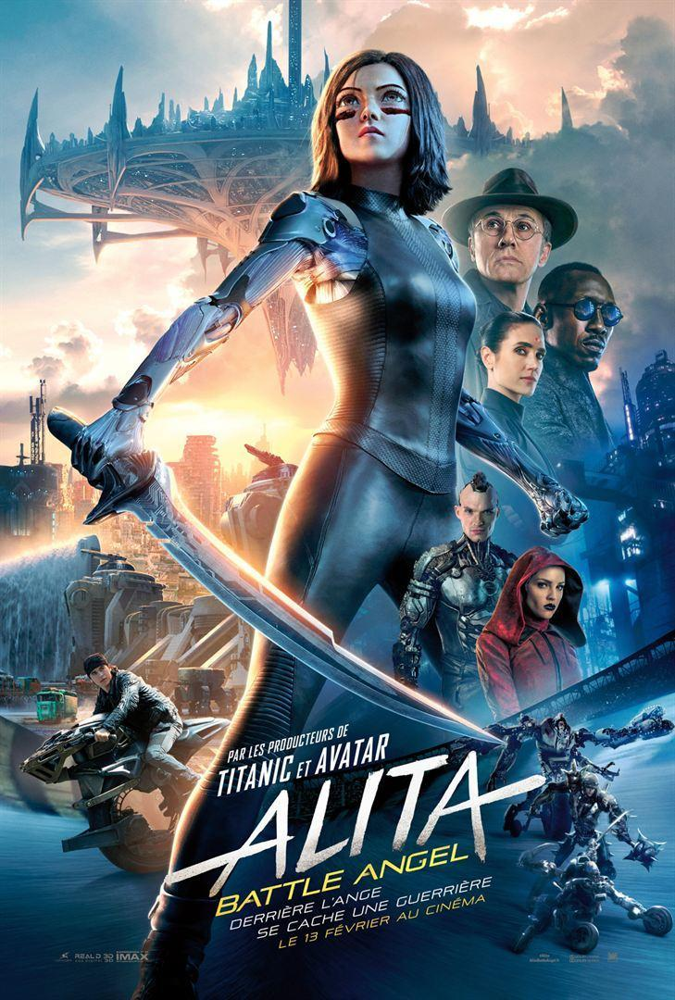

GUNNM: BATTLE ANGEL ALITA
Gally despierta en un centro medico, Ido la desperto despues de encontrarla en un basurero, viva, pero destruida y con la memoria fragmentada, no recuerda su nombre asi que Ido la apoda Gally(nombre de su antiguo gato), en un inicio, Gally desconoce completamente su pasado; pero al descubrir sus habilidades de combate, decide convertirse en cazador guerrero para recordar su pasado a través del Panzer Kunst, su estilo de combate.
La primera publicacion del comic fue en diciembre de 1990

GUNNM: LAST ORDER
Gally vuelve a abrir los ojos gracias a la nanotecnología desarrollada por Desty Nova, el mismo que le puso una trampa mortal un año atrás. El científico salemiano se ocupa de reconstruir su cerebro, lo que provoca que más recuerdos de su pasado salgan a la luz, además de brindarle un nuevo cuerpo con la capacidad de explotar sus habilidades al máximo. Ella está ahora en Salem y se encuentra con una ciudad devastada: se desató una guerra civil al revelarse el secreto su secreto más oscuro. Pero la noticia de que su amiga Lou Collins está desaparecida en el espacio provoca que salga en su búsqueda, aunque dicha tarea no será nada sencilla. Gally se encontrará con viejos amigos y tenderá nuevas alianzas en su camino e incluso se verá envuelta en una guerra interplanetaria entre diferentes fuerzas del sistema solar...

GUNNM: MARSH CHRONICLE
Paso de ser una niña huerfana sin amigos ni esperanza, a convertirse en la guerrera más poderosa del sistema solar, asi es, hablamos de Gally, su pasado esta a la vuelta de la esquina, y ya no esta sola, su reencuentro con una vieja amiga la llevara al lugar donde todo empezo, MARTE.

Alita: Battle Angel
El 14 de febrero del año 2019 se estreno en los cines un live action basado en el manga GUNNM: BATTLE ANGEL ALITA. Despues de más de 20 años sin noticias o posibilidades de que haya una adaptacion animada, se estreno esta pelicula en los cines, las reseñas de los fans fue muy variado, algunos la amaban, otros decian que arruino por completo la posibilidad de que haya otra pelicula, aunque recaudo más de lo que costo, ya pasaron más de 2 años y aun no hay noticias sobre una siguiente entrega.
El autor de la novela original Yukito Kishiro dijo que es la mejor pelicula que vio en su vida.
